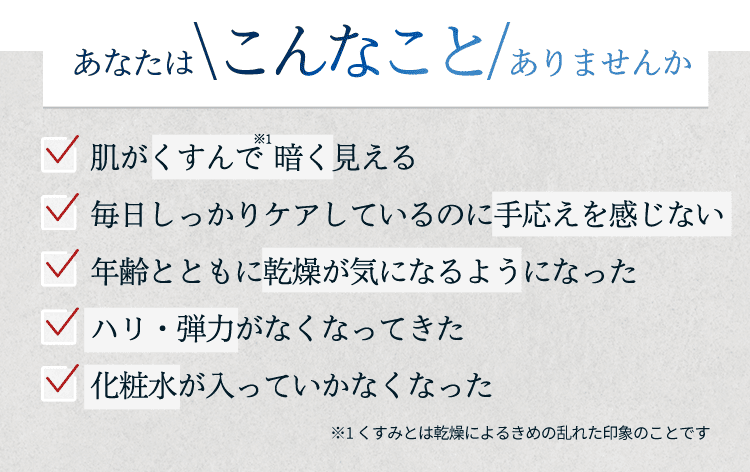
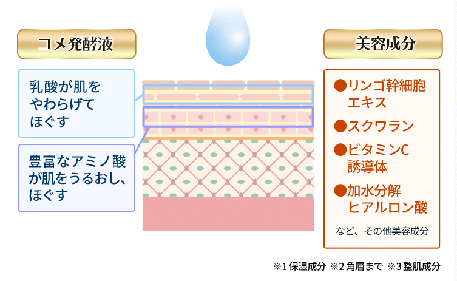
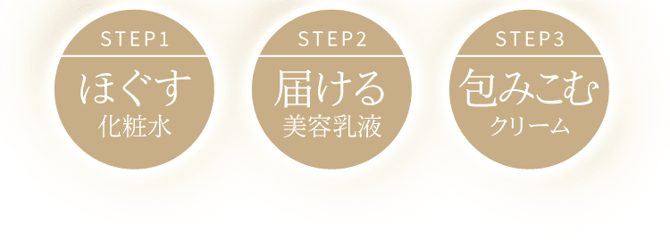
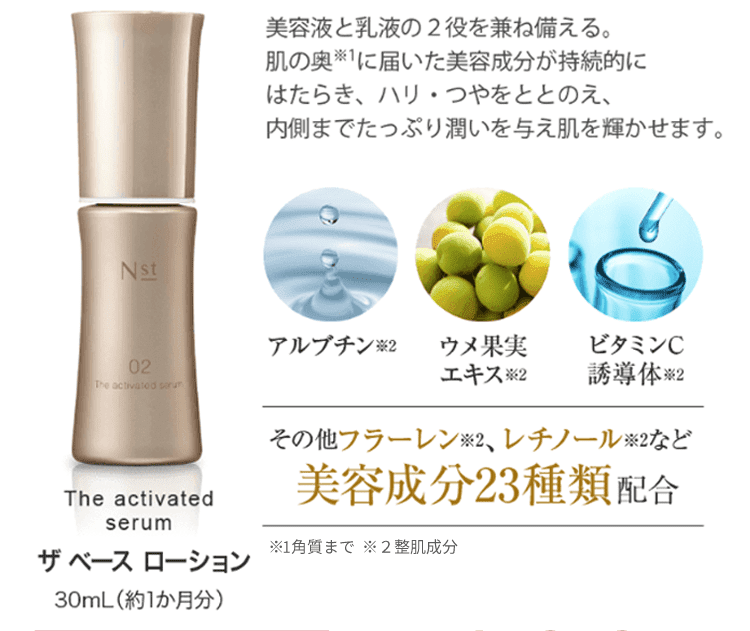
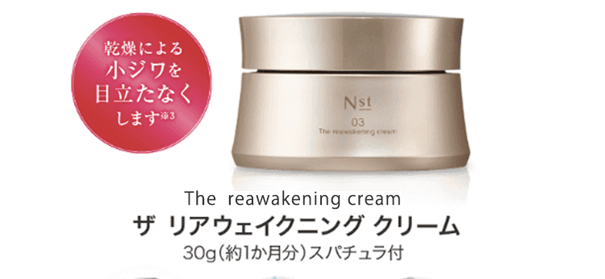
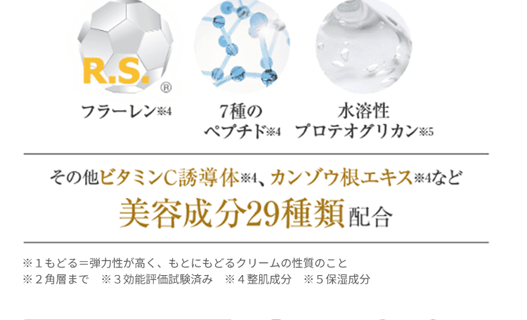

- 41歳/女性
これまでのお手入れでは、水分が手に残る感じがかなりあったのですが、Nstは出した化粧水の8割は手から離れている感じですごく良かったです。
- 60歳/女性
コメ発酵液を使い、水を加えていないからなのか濃度の濃さを感じました。今まで使用した化粧水の中で1番好きな使用感で、すばらしく気に入りました。何を使うか迷ったらこの化粧水にします。しいていえば、容器がプッシュ式だととても楽で使いやすいと思いました。
- 53歳/女性
濃厚さを感じるにも関わらず、重くないしベタつきや気になる匂いもありません。 使い心地が大好きです。コメ発酵液が自分の肌に合っているのでは？と思ったことがありましたが、「あきたこまち」を使用したコメ発酵液は更に合っているのかも！
- 50歳/女性
思っていたよりさらっとしたテクスチャーだけど、物足りなさはなく、これだけでもいいかもと思えるほど。
100円玉大を2回分という量なのに、馴染みが良いです。手になじませるとすぐにモチモチと吸いつく感じがして、今までにないテクスチャーとのギャップを感じました。化粧水後の美容液やクリームをスムーズに肌へ運ぶ道筋をつくっているような感じ。
-

- 48歳/女性
化粧水をつけた後、もっちり感があって手のひらに吸いつく感じ。
かなり潤いのあるテクスチャーで、化粧水だけでもOKかなと思ってしまうくらいでした。
肌なじみの良さだけでなく、香りもとても良かったです。
-
- 43歳/女性
見た目のサラッと感が良い意味で裏切られるような、しっとり潤いに満ちた感触。
私自身、混合肌でサラッと感としっとり感、どちらも満たしてくれるので気に入っています。季節を問わず使えそうです。
-
- 49歳/女性
化粧水の感触、香りのバランスが良いと感じました。
手に出すと思ったよりさらっとしている印象でしたが、潤いは高いと思います。水をほぼ使用していない、こだわりの成分で作られているのが魅力ですね。





- 48歳/女性
水分たっぷりなのに、ベタつきはありません。
なじみが早く、みずみずしいつけ心地がとても気に入りました。
少量でもかなり伸びるので、コスパが良いですね。
- 43歳/女性
まず、ボトルがプッシュ式になっているところが使いやすくていいです。テクスチャーの固さがほど良く、伸びも良いのでムラなくぬれます。この くらいのテクスチャーだと塗りやすく、扱いやすいですね。サラサラすぎる美容液は好きではないけど、エニストの美容乳液はOKです。
- 50歳/女性
柔らかすぎないテクスチャーなので、肌に伸ばしやすい。手で温めてからなじませるように、ハンドプレスをしています。
ベタつきもなく、潤いを感じられました。
-
- 49歳/女性
適度なとろみ感があり、なめやかで肌なじみ・伸びもよく、好みの感触でした。
-
- 37歳/女性
少ない量でも潤いがあります。
普段美容液はべたつくので使わないんですが、エニストの美容乳液はベタベタしないので好きです。


- 55歳/女性
高級感のあるパッケージが良かったです。また、ベタつかずにしっとりとしたテクスチャーなので、使いやすく感じました。量もたっぷり入っているので、コスパが良いと思います。香りがほとんどないところも使いやすくて良かったです。
- 54歳/女性
朝起きて、顔を洗うときになっても、保湿されている感じが残っています。
濃厚なので、少量でも良いかも。気になる部分には重ねて使っています。
クリームが形状記憶のように、ピッタリと肌にはりつく感じが好きです。
- 48歳/女性
クリームのイメージが変わりました。水分たっぷりでさっぱりなのに、しっかりフタをしてくれそう。心地良い潤い感やプルプル弾力性のあるテクスチャーがとても気に入りました。
- 55歳/女性
夜たっぷりクリームを塗っています。スーッとのびて気持ちがいいです。夕方でもどんよりしなくなったし、鏡の前に行く回数も少なくなりました。
-
- 61歳/女性
薄いクリーム色でぷるんとしたテクスチャーはとても自分の好みでした。少量でも伸びが良く、とても使い心地が良かったです。品質も良く、信頼感をもって使用できました。
-
- 60歳/女性
プルプルの感触で伸びが良い。サラッとした触り心地ですが、しっとり感も感じられます。クリームの肌色が高級感があり、開けて使うたびにリッチな気分になります。
- 37歳/女性
クリーム自体がプルンとしていて、塗心地が気持ち良いです。とてもしっとりしていて保湿力が高いと感じました。

化粧品の保存方法は？
エニストシリーズの使用の順番を教えてください
化粧品に使用期限はありますか？
敏感肌でも使用できますか？

他のブランドと併用しても大丈夫ですか？またラインで使った方がいいですか？
肌に異常が現れた場合、どうすればいいですか？